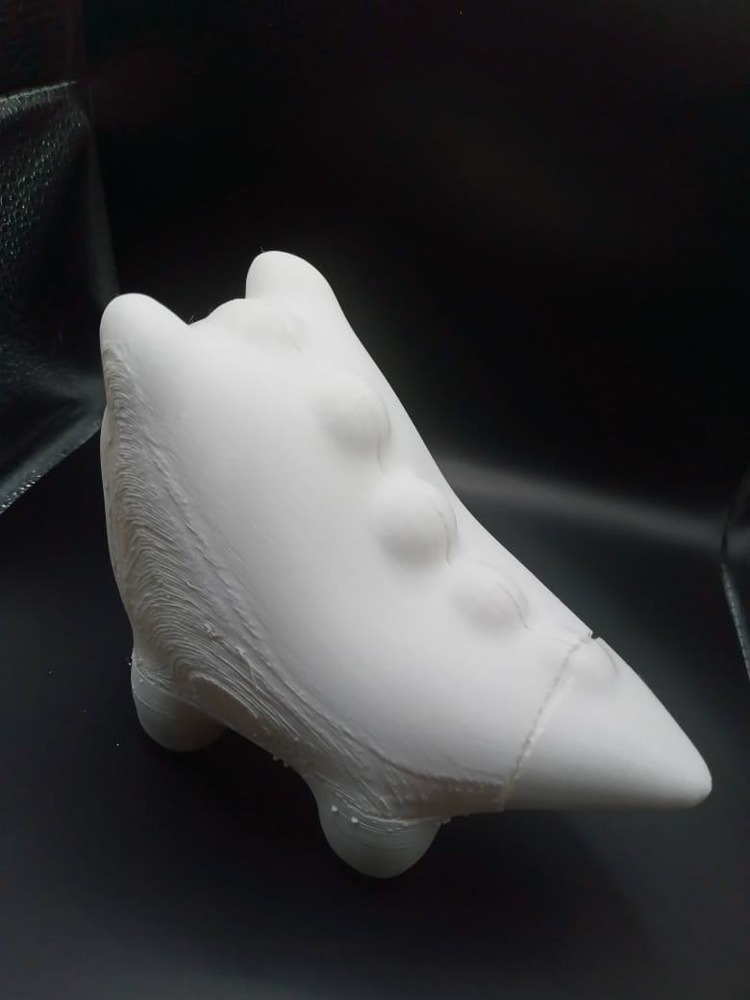
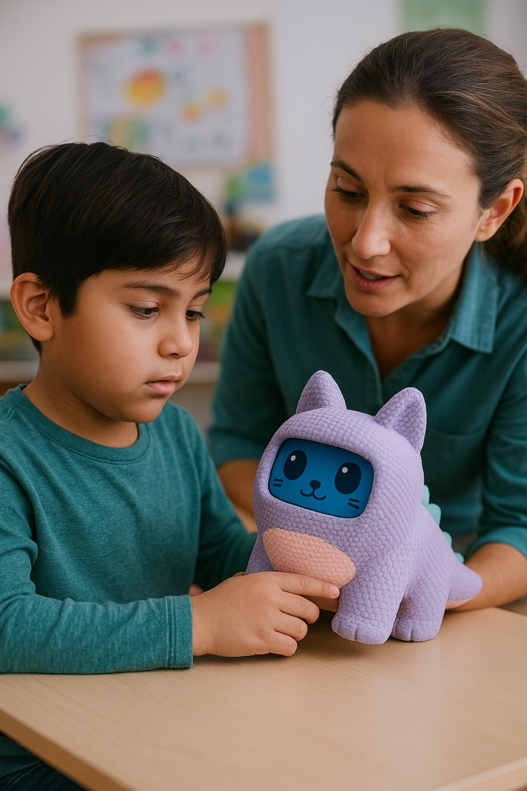
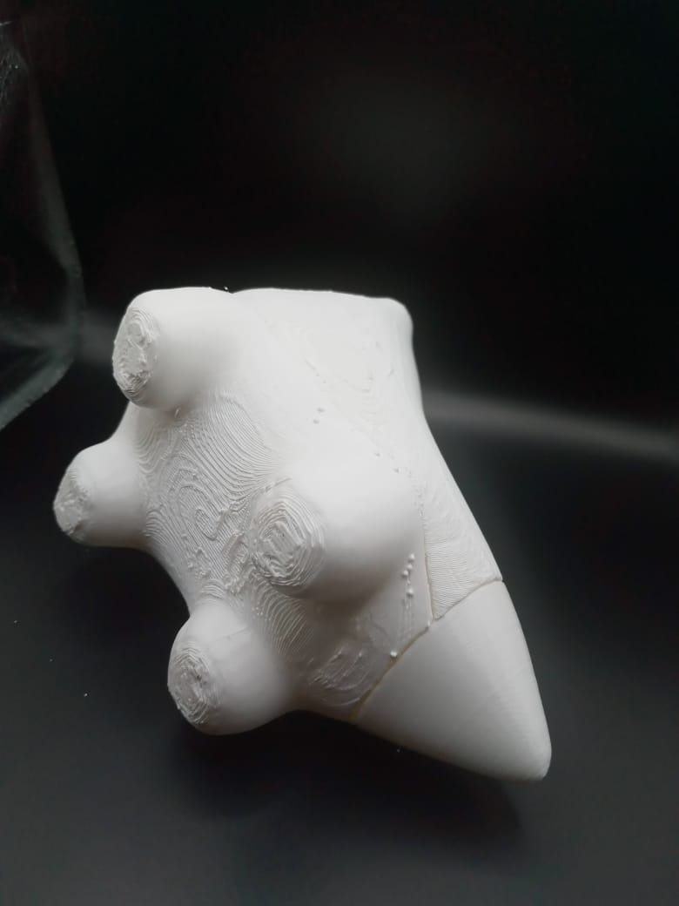
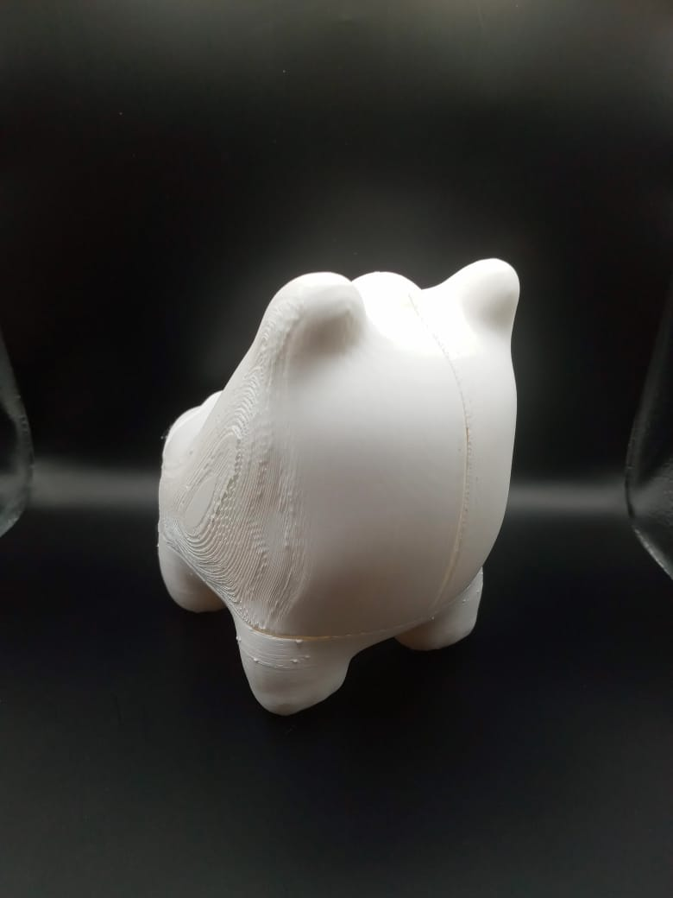
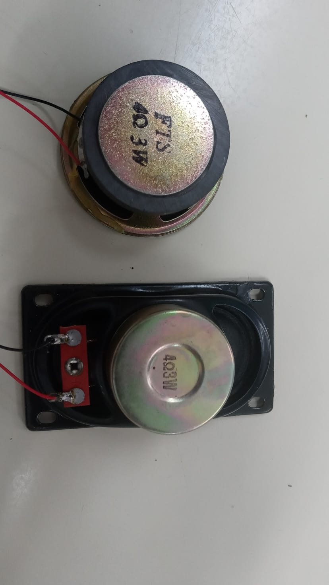
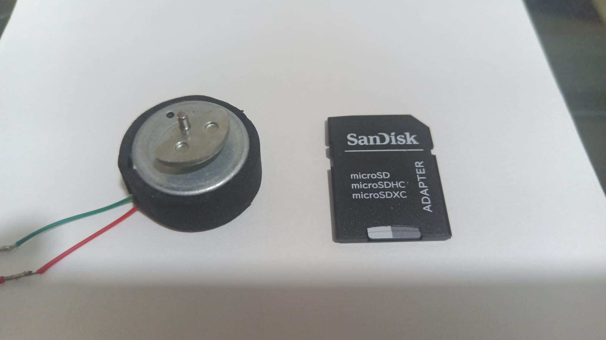
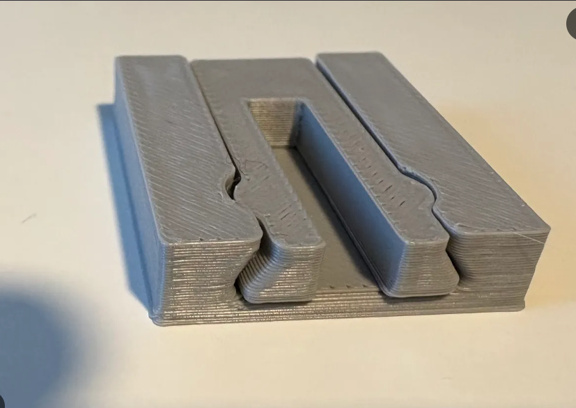
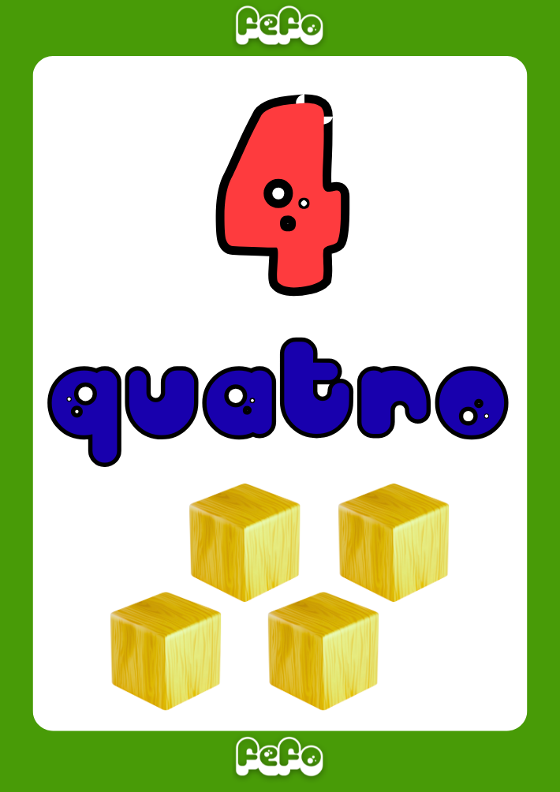
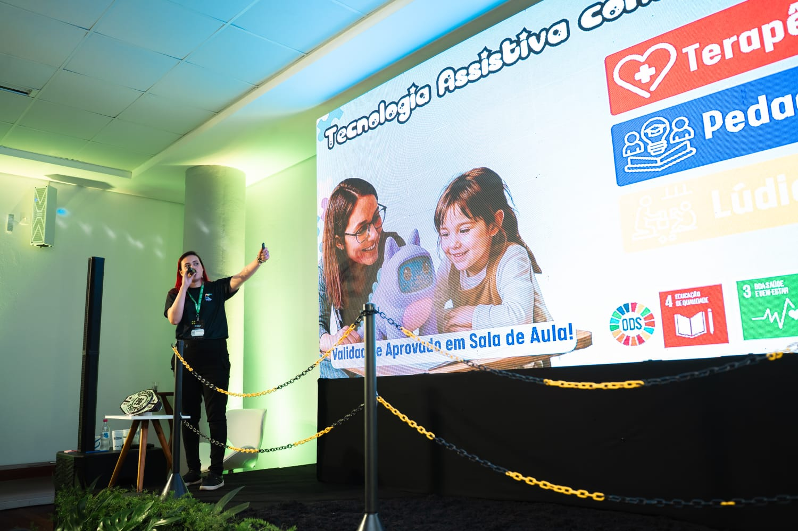
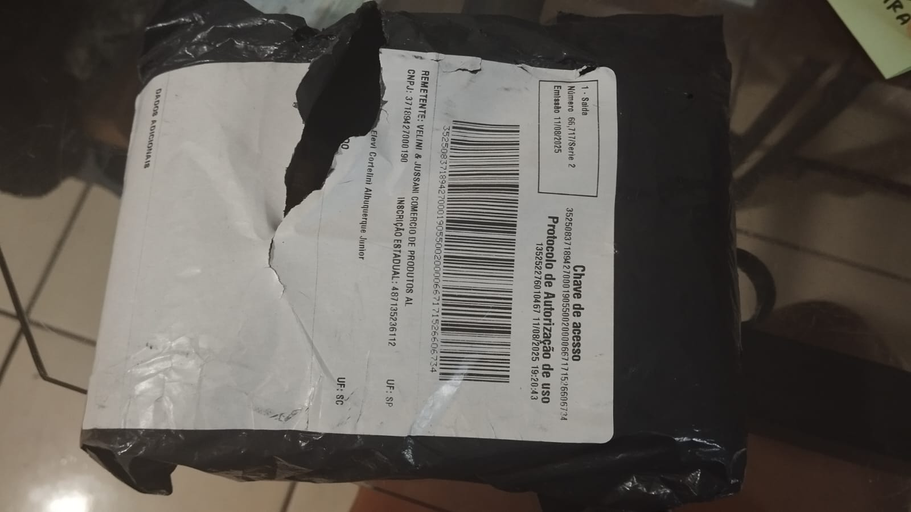

Galeria do FEFO Pet: Do Laboratório à Sala de Aula
Explore as fotos reais do protótipo robótico FEFO, montagem dos circuitos ESP32, modelagem CAD 3D, livrinhos pedagógicos e aplicação prática com educadores.
Expressões Faciais na Tela
Rostinho dinâmico que reage com afeto e orienta a criança durante a rotina escolar.

Luzes Terapêuticas LED
Cromoterapia suave em frequências visuais calculadas para reduzir a ansiedade sensorial.

Design Físico Ergonômico
Robô em formato de pet interativo com corpo confortável ao toque e pegada infantil.

Tamanho de Pelúcia Compacto
Super leve e portátil para acompanhar a criança entre a sala de aula e a sua casa.

União de Educação & Engenharia
Profª Tailise da Roza (Psicopedagoga) e Prof. Elevi Cortelini (Analista de TI & Robótica).

Validação com Professores
Testado e aprovado por especialistas em Educação Especial e gestão educacional.

Placa Microcontrolada Embarcada
Controle de processamento rápido, comunicação Bluetooth LE e sensor acústico anti-crise.

Sonoridade Límpida & Segura
Saída DAC Mono em volume suave projetada especificamente para evitar sustos sensoriais.

Aconchego Hápitco & Vibração
Estimulação tátil suave que simula o bater de um coraçãozinho reconfortante.

Modelagem 3D do Chassi
Estrutura impressa com encaixes de precisão e espaço seguro para bateria e sensores.
Livrinhos de Histórias Ilustradas
40 contos lúdicos originais ensinando empatia, hábitos de higiene e rotina diária.

Cards de Rotina & Numerais
Ferramenta de comunicação alternativa (PECS/Rotina Visual) para uso integrado em sala de aula.

Testado no Ambiente Escolar
Desenvolvido a partir da vivência real em sala de aula com crianças neurodivergentes.

Kit Completo de Entrega
Embalagem protetora contendo o pet eletrônico, carregador, manual e kit de cards.